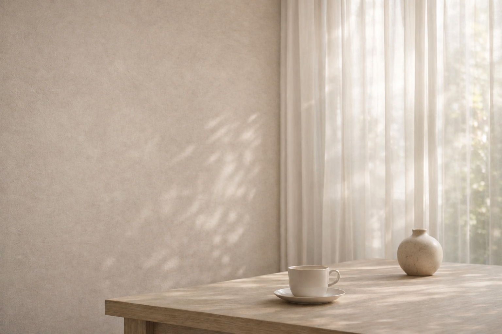
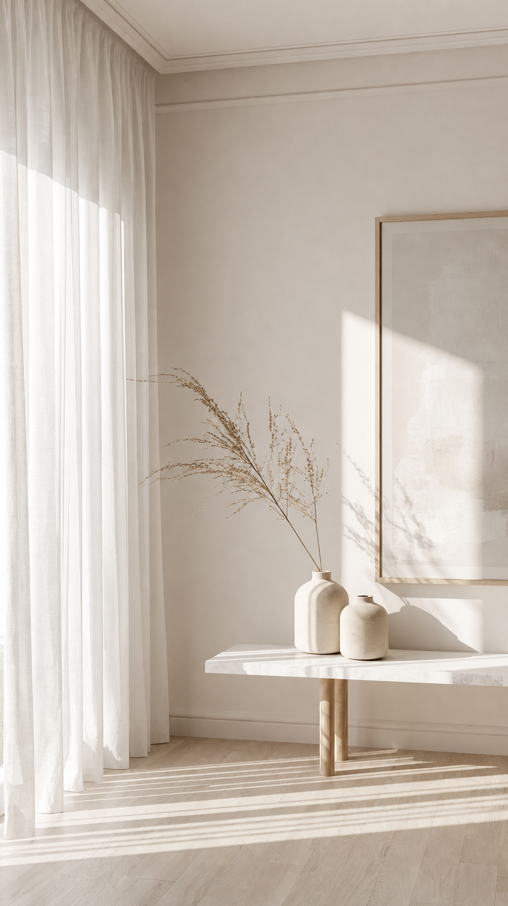
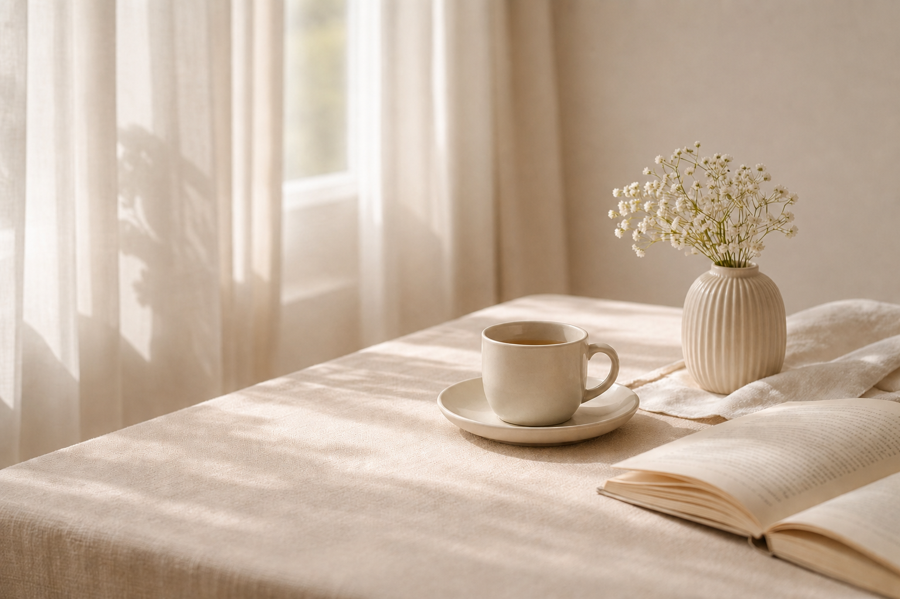
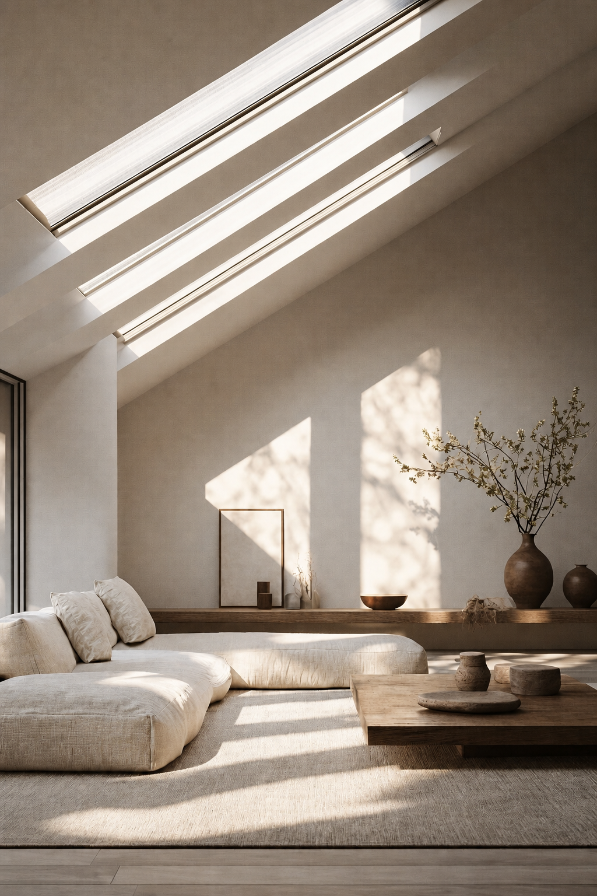
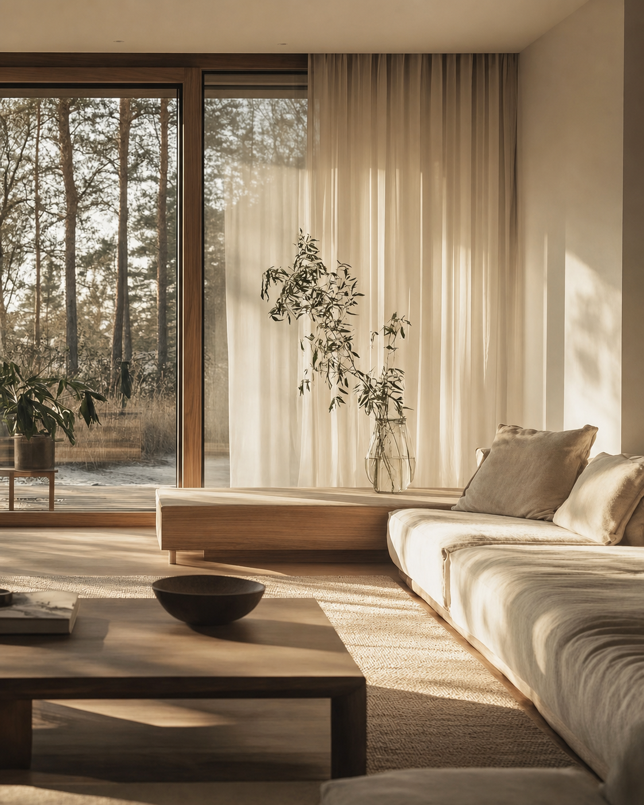
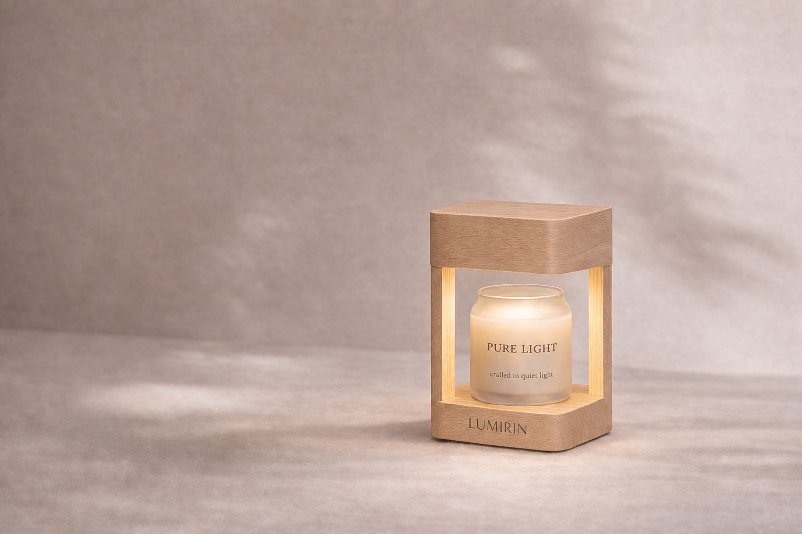
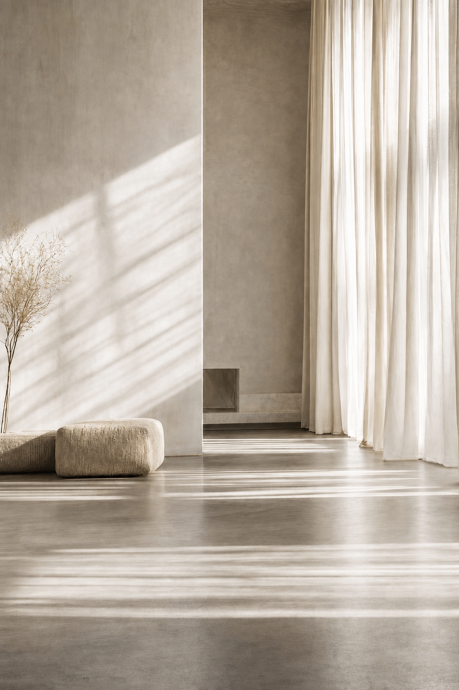

어떤 날은 특별한 사건이 없어도
마음이 쉽게 지치고
집 안의 공기가 낯설게 느껴집니다.
WHY WE EXIST
향은 문제를 해결하지는 않지만, 공기의 결을 바꾸는 것만으로도
하루의 밀도는 달라질 수 있다고 믿습니다.
그래서 우리는 강한 자극 대신,
조용히 머무는 분위기를 선택합니다.

LUMIRIN
A quiet ritual for everyday.
어떤 날은 특별한 사건이 없어도
마음이 쉽게 지치고
집 안의 공기가 낯설게 느껴집니다.
WHY WE EXIST
향은 문제를 해결하지는 않지만, 공기의 결을 바꾸는 것만으로도
하루의 밀도는 달라질 수 있다고 믿습니다.
그래서 우리는 강한 자극 대신,
조용히 머무는 분위기를 선택합니다.
CORE PHILOSOPHY
공간을 방해하지 않을 것 존재감보다 공기감으로.

SENSORY MOOD
아침의 커튼 사이로 들어오는 빛,
따뜻해진 테이블 위의 그림자,
저녁이 내려앉을 때의 낮은 온도.
루미린의 향은 그 장면을 방해하지 않는 방식으로,
천천히 스며듭니다.



“빛이 머무는 공간”
향도 서두르지 않습니다.
HOW WE CREATE
루미린의 향은 강하게 드러나지 않습니다.
공간에 자연스럽게 스며들어 빛과 질감,
하루의 속도와 함께 머뭅니다.
우리는 향을 얹지 않고
공기를 정돈합니다.


LUMIRIN VALUES